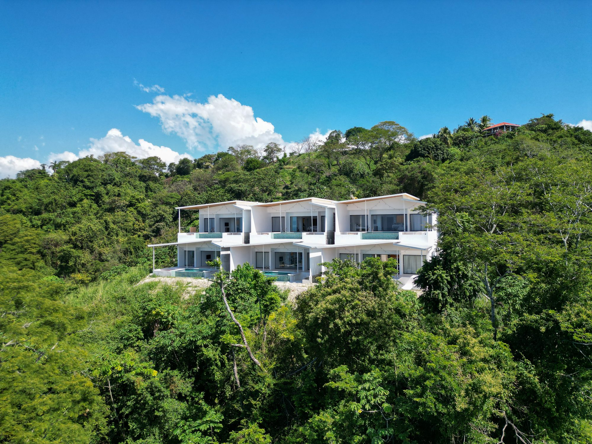
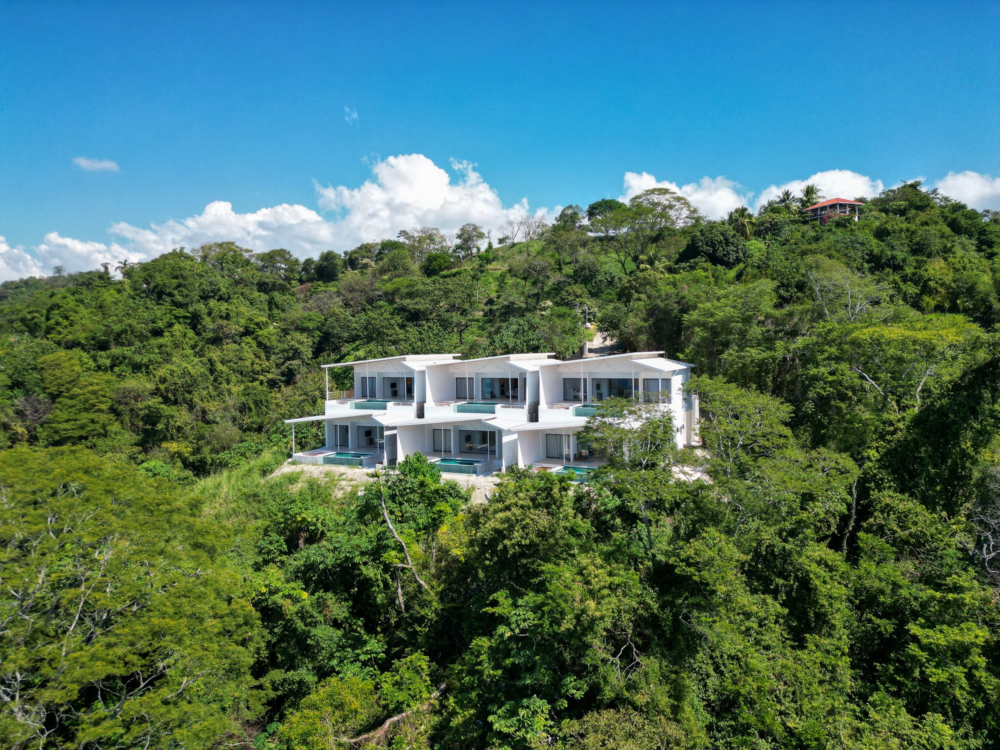

Santa Teresa se révèle plutôt qu'elle ne se découvre. Ce petit village côtier, perché à la pointe sud de la péninsule de Nicoya au Costa Rica, reste relativement épargné par le tourisme de masse malgré sa réputation croissante. C'est un lieu où la jungle rencontre le Pacifique avec une véritable magie—où les randonnées matinales à travers la forêt nuageuse mènent à des cascades cachées, où les promenades en fin d'après-midi sur la plage révèlent des créatures bioluminescentes, et où le rythme de la vie obéit encore aux marées et aux couchers de soleil.
Comment s'y rendre
Santa Teresa n'est pas aussi direct qu'un vol pour San José, ce qui en fait justement son charme. Il existe trois itinéraires principaux, chacun avec ses avantages :

Ferry + Route (Le plus populaire)
C'est l'itinéraire classique préféré par la plupart des visiteurs. Conduisez depuis San José via l'autoroute 27 jusqu'à Puntarenas, puis prenez le ferry à travers le golfe de Nicoya de Puntarenas à Paquera. Le ferry dure généralement 80 minutes, et vous devez réserver à l'avance en haute saison—les places se remplissent rapidement. De Paquera, il faut encore 70–90 minutes de route à travers les routes de montagne pour atteindre Santa Teresa. Temps total de voyage : 4–6 heures selon le trafic. Le trajet est spectaculaire, offrant des vues sur la Costa Rica rurale que la plupart des touristes ne voient jamais.
Vol domestique (Le plus rapide)
Les compagnies aériennes SANSA exploitent des vols directs depuis San José vers Cobano (l'aéroport le plus proche de Santa Teresa), prenant environ 30 minutes. Depuis octobre 2023, cela a remplacé l'ancien aéroport de Tambor. Les vols coûtent environ 110 USD par personne, avec 1–2 départs quotidiens selon la saison. Cette option est idéale si vous valorisez le temps par rapport au budget, et élimine le long trajet et l'attente du ferry.
Bus Public
Le système de transports en commun du Costa Rica est étonnamment efficace mais exige de la patience. Les bus partent du Terminal TIG à San José à 6 h du matin et prennent 6–7 heures. Bien qu'économique, l'expérience peut être intense, le voyage couvrant des routes de montagne sinueuses. C'est une véritable expérience costaricienne, bien que la plupart des visiteurs préfèrent le confort du ferry ou du vol.
Ne conduisez pas la nuit. Les routes de montagne vers Santa Teresa sont mal éclairées et potentiellement dangereuses après le coucher du soleil. Si vous conduisez vous-même, arrangez-vous pour arriver en fin d'après-midi. De nombreux visiteurs engagent des chauffeurs privés (150–250 USD) pour une expérience plus sûre et confortable.
Quand visiter
Le climat de Santa Teresa se divise nettement en deux saisons distinctes, chacune avec son caractère :
Saison sèche : novembre–avril
Ciel clair, soleil le matin et pluie minimale définissent ces mois. C'est la haute saison touristique—les hôtels se réservent des semaines à l'avance, et les plages sont animées. L'air est frais, les randonnées sont confortables, et les couchers de soleil sont prévisibles. Si vous prévoyez des activités comme la randonnée des Chutes de Montezuma, c'est le moment de venir. Cependant, attendez-vous à des prix plus élevés et des foules plus importantes, surtout décembre–janvier.
Saison verte : mai–août
Ne vous laissez pas tromper par le nom—il pleut, mais par intermittence. Les matinées sont souvent claires, les pluies d'après-midi rafraîchissent l'air, et le paysage explose de couleurs. Les prix baissent de 20–30%, les restaurants ont des tables disponibles, et la ligne aux spots de surf s'amincit considérablement. La jungle s'anime avec la faune : les singes hurleurs appellent tout au long de la journée, les oiseaux sont plus actifs, et l'expérience se sent plus authentique. Si vous êtes un voyageur plutôt qu'un touriste, c'est magique.
Septembre–octobre représente la saison intermédiaire : imprévisible, occasionnellement humide, mais parfois parfait. Réservez en conséquence.
Où manger et boire
Koji's
L'étalon-or des sushis dans la région. Koji's occupe un espace de jardin charmant avec un éclairage atmosphérique, et la qualité est exceptionnelle—pensez poisson vierge, rouleaux créatifs, et leur fameux saké chaud. Les réservations sont essentielles en haute saison. L'expérience est haut de gamme-décontractée, avec des prix reflétant la qualité (plats 18–28 USD).

Katana
Tout aussi excellent que Koji's mais à des prix légèrement inférieur. L'atmosphère est plus décontractée, presque cachée, et la qualité alimentaire ne vacille jamais. Si vous ne pouvez pas entrer à Koji's, Katana offre le même repas de calibre dans un cadre plus relaxant.
The Bakery
Commencez vos matinées ici. Excellentes pâtisseries, excellent café, et véritables plats de petit-déjeuner—pensez œufs, tartines d'avocat bien faites, et jus d'orange frais. C'est devenu un lieu de rassemblement pour les locaux et les visiteurs. Arrivez tôt ; cela se remplit rapidement.
Eat Street
Une cour à manger décontractée avec quatre vendeurs de qualité servant tout, des tacos aux assiettes de poisson frais. C'est parfait pour un déjeuner rapide entre les activités, avec des portions généreuses à 10–20 USD. Pas de réservation requise, atmosphère locale authentique.
Que faire
Chutes de Montezuma
Un court trajet de 45 minutes mène à un sentier où une randonnée de 20 minutes à travers la jungle vous amène à des cascades spectaculaires. Le bassin principal est profond et frais—parfait pour nager après la randonnée. Portez des chaussures appropriées ; les rochers sont glissants. Les randonnées au lever du soleil vous récompensent avec moins de foules et des observations de faune.
Surf
Playa Carmen, Santa Teresa Main, et La Lora offrent des vagues pour tous les niveaux. Les locations de planches et les cours sont facilement disponibles. Passez un jour ou une semaine—les breaks sont assez cohérents pour une amélioration rapide.
Yoga et Bien-être
Plusieurs studios proposent des cours sans réservation pour 12–15 USD. Que vous soyez un yogi dédié ou simplement vous étirer après les activités, la combinaison du cadre de jungle et des instructeurs qualifiés rend les cours mémorables.
Tours en ATV
Explorez les sentiers cachés, les plages secrètes, et les chemins de jungle avec un guide local. Les locations coûtent 50–70 USD par jour, et les tours guidés offrent un meilleur accès aux zones que vous ne trouveriez pas seul.
Île de Tortuga
Des excursions complètes de plongée en apnée et de plage partent des docks à proximité. Le voyage comprend d'excellentes plongées en apnée, des plages de sable blanc, et souvent un BBQ déjeuner en bord de plage. C'est touristique mais véritablement utile.
Réserve de Faune Curu
À seulement une heure, cette réserve protégée abrite des singes, des coatis, des oiseaux exotiques, et des reptiles. Les randonnées guidées offrent une excellente observation de la faune, particulièrement en début de matin. L'entrée est d'environ 30 USD avec guide.
Équitation
Les balades au coucher du soleil sur la plage sont emblématiques. Les guides locaux arrangent les trajets (40–60 USD incluant guide) qui s'adaptent à tous les niveaux d'expérience.
Jardin de Papillons et Brasserie
La Butterfly Brewing Company combine la bière artisanale avec un jardin de papillons vivants—quelques heures agréables mélange nature et bière froide.
Bassins de Marée à Mar Azul
Au sud de la ville, les bassins de marée révèlent des étoiles de mer, des oursins, et de petits poissons piégés dans l'eau cristalline. Mieux visité à marée basse.
Informations pratiques
Argent et Banque
Seulement deux distributeurs automatiques existent dans le village, et tous deux facturent des frais internationaux élevés. Apportez de l'argent en colones costaricaines (échangez à San José avant de partir). Les cartes de crédit fonctionnent dans les restaurants et les magasins, mais l'argent liquide est roi pour les petites transactions. Envisagez l'USD ; il est largement accepté.

Communication
La plupart des restaurants ne répondent pas aux appels téléphoniques. Utilisez WhatsApp pour les réservations—c'est la méthode de communication standard. Le service cellulaire est fiable ; les forfaits internationaux fonctionnent bien.
Transport
Louez un ATV (50–70 USD/jour) ou une voiture (40–60 USD/jour) pour une liberté complète. Les taxis existent mais sont chers pour les longues distances. De nombreux logements arrangent les transferts depuis l'aéroport ou le ferry.
Shopping et Fournitures
Les supermarchés limités répondent aux besoins essentiels. Faites le plein d'essentiels à Puntarenas avant le ferry si vous séjournez loin. Le village a des pharmacies, un petit hôpital, et quelques magasins, mais la sélection est limitée.
Note sur la Faune
Santa Teresa se situe dans l'une des Blue Zones du monde—des zones avec une longévité et une santé exceptionnelles. Les résidents de la péninsule de Nicoya vivent régulièrement jusqu'à 100 ans avec vigueur. Les locaux l'attribuent au rythme paisible, à la nourriture locale fraîche, et aux liens communautaires forts.
Les Saisons Impactent Tout
Haute saison (décembre–janvier) signifie restaurants réservés et prix plus élevés. De nombreux établissements ferment en basse saison (septembre–octobre) pour maintenance. Planifiez en conséquence.
Séjournez en Paradis Privé
Au-delà de l'agitation de Santa Teresa gît la pure séclusión : Les Roches. Six villas privées, chacune avec piscine à débordement, vue jungle, et intimité totale. La base parfaite pour explorer tout en ayant un sanctuaire où revenir.
DÉCOUVREZ LES ROCHES →Réflexions finales
Santa Teresa récompense ceux qui prennent le temps d'y arriver. Ce n'est pas une escapade de week-end rapide depuis San José—c'est un choix délibéré de sortir du tourisme conventionnel. Le village reste authentique précisément parce qu'il est inconfortable d'y accéder. Vous trouverez des voyageurs ici, pas des touristes. Vous aurez des conversations avec les locaux. Vous découvrirez des restaurants que personne d'autre ne connaît. Et vous comprendrez pourquoi les gens reviennent année après année, trouvant toujours quelque chose de nouveau dans ce beau coin négligé du Costa Rica.